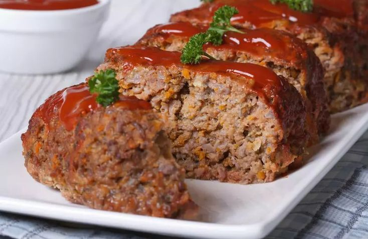

Best Ever Meatloaf
Best Ever Meatloaf Recipe

Description
The best meat loaf I have ever found. Try it and you will see.
Ingredients
Serves 6
- 2 eggs
- ⅔ cup milk
- 2 teaspoons salt
- ¼ teaspoon ground black pepper
- 3 slices bread, crumbled
- 1 ½ pounds ground beef
- 1 onion, chopped
- 1 cup shredded Cheddar cheese
- ½ cup shredded carrot
- ¼ cup brown sugar
- ¼ cup ketchup
- 1 tablespoon prepared yellow mustard
Steps
- Preheat oven to 350 degrees F (175 degrees C).
- Whisk eggs, milk, salt, and ground black pepper in a large bowl.
- Add crumbled bread and stir until dissolved.
- Mix ground beef, onion, Cheddar cheese, and carrot into bread mixture.
- Transfer mixture to a 9x5-inch loaf pan.
- ombine brown sugar, ketchup, and mustard in a small bowl; spread over meat mixture.
- Bake in the preheated oven until no longer pink in the center, 1 to 1 1/4 hours. An instant-read thermometer inserted into the center should read at least 160 degrees F (70 degrees C).